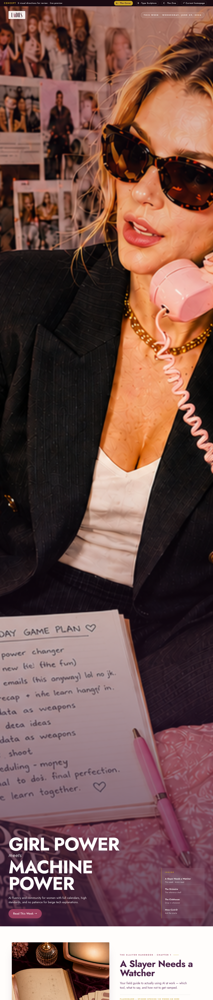
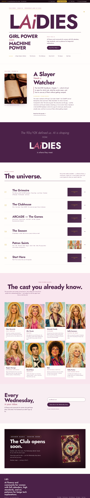
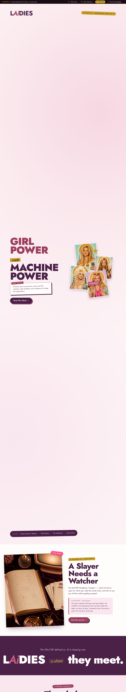

Round 12 · Design Concepts
Three distinct visual directions for the LAiDIES homepage. Same content. Same locked voice (GIRL POWER MEETS MACHINE POWER · The 90s/Y2K defined us · AI fluency and community). Three different design languages. Open each in a new tab and compare. Pick the one that feels right and we build that out.

Concept A
Magazine-led. Full-bleed lets-chat image with the brand headline on the image. Editorial card grid with the Grimoire as the lead tile. Vogue Runway / T Magazine register.
Open →
Concept B
Type carries the brand. Massive LAiDIES wordmark sets the cover. Asymmetric layouts throughout. Rooms as a typographic list with thumbnails. The Gentlewoman / Cabana / Apartamento register.
Open →
Concept C
Y2K editorial zine. Collage cover with saint portraits tilted across the right column. Sticker accents, saturated color blocks, hot-pink Wednesday-drop band, hand-cut card edges. Most personality, least restrained.
Open →